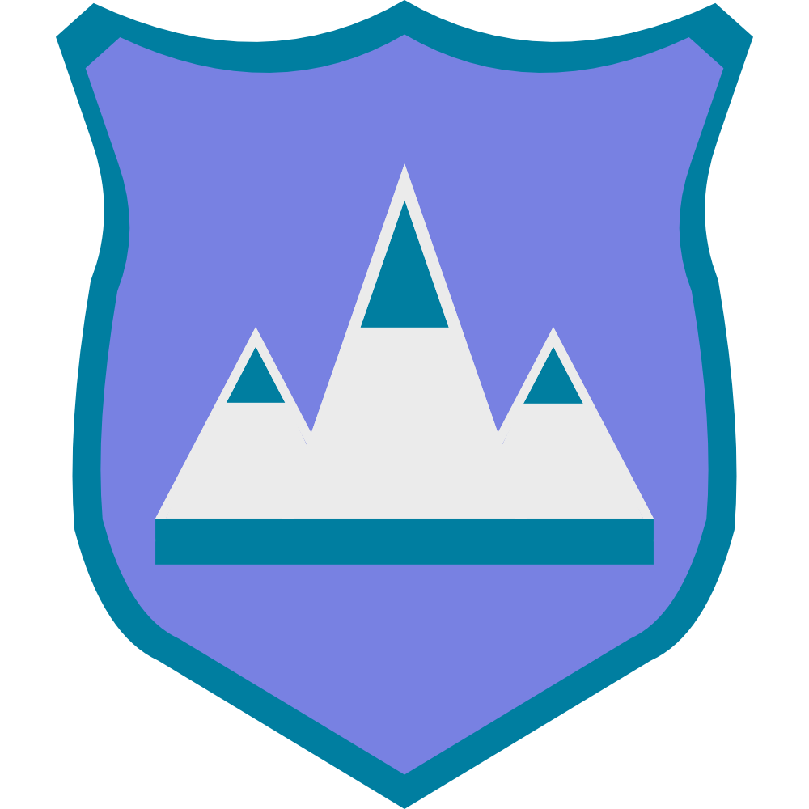

Northern Gorge
Frozen Frontier

Frozen Frontier
The Northern Gorge Province is largely uninhabited, being entirely frozen and desolate. The main feature of the icy Northern Gorge is the Glass Fjords, a network of permanently-frosty freshwater rivers and saltwater inlets. The depth of the ice varies at different points in the fjords, making it treacherous to navigate. Only the native Inochi people that make their homes here know how to safely travel the fjordlands. They build their villages on solid ice and cut holes into shallow ice in order to fish and trap food. The Great Astalon River also gets its start in the Glass Fjords. As the name suggests, this province contains the northern tip of Sundering Gorge, nestled between the Shield and Argyle Mountains.

Though their surfaces never thaw, most of these fjords have crystal-clear water flowing beneath. When the sun is on the horizon, the ice sparkles iridescently and is a breathtaking sight.
The Inochi not only survive, but thrive in this unforgiving climate. They place great value on clan and family integrity, but are also hospitable to outsiders who visit their villages.
The Frosty Sea, as the name implies is full of ice. Extremely difficult to navigate, not even the native Inochi know where it ends. Some believe an enormous wall of ice seals off the northern edge of the world.

East to Ruelan

South to Fjerda